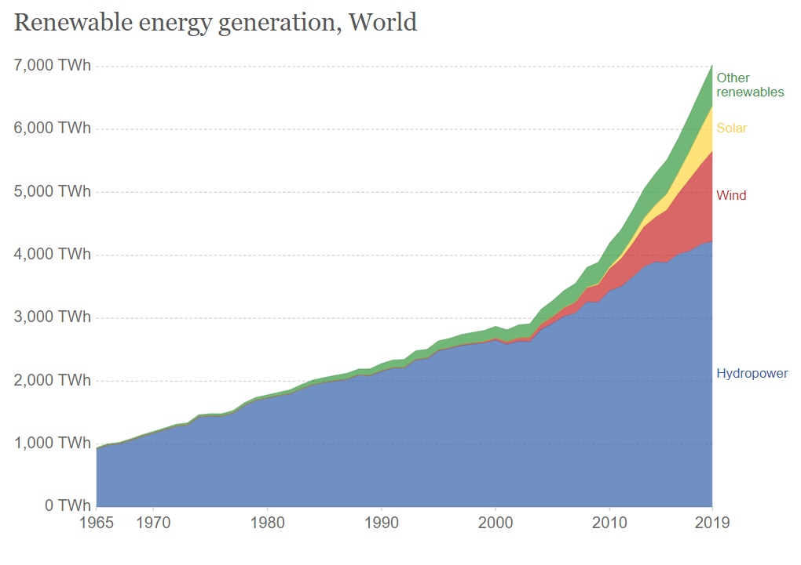

'Renewable Energy Resourses'
A renewable resource, also known as a flow resource, is a natural resource which will replenish to replace the portion depleted by usage and consumption, either through natural reproduction or other recurring processes in a finite amount of time in a human time scale. When such recovery rate of resources is unlikely to ever exceed a human time scale, these are called perpetual resources.Renewable resources are a part of Earth's natural environment and the largest components of its ecosphere. A positive life-cycle assessment is a key indicator of a resource's sustainability.
A type of renewable resources is renewable energy resources. Common sources of renewable energy include solar, geothermal and wind power, which are all categorized as renewable resources. Fresh water is an example of renewable resources.
The following demographs demonstrates the Renewable Resources:

'Types Of Renewable Energy'
Renewable energy refers to the provision of energy via renewable resources which are naturally replenished fast enough as being used. It includes e.g. sunlight, wind, biomass, rain, tides, waves and geothermal heat.
BioMass
Biomass is referring to biological material from living, or recently living organisms, most often referring to plants or plant-derived materials.BioFuel
A biofuel is a type of fuel whose energy is derived from biological carbon fixation. Biofuels include fuels derived from biomass conversion, as well as solid biomass, liquid fuels and various biogases. Bioethanol is an alcohol made by fermentation, mostly from carbohydrates produced in sugar or starch crops such as corn, sugarcane or switchgrass.Geothermal Energy
Geothermal energy is the thermal energy in the Earth's crust which originates from the formation of the planet and from radioactive decay of materials in currently uncertain but possibly roughly equal proportions. The high temperature and pressure in Earth's interior cause some rock to melt and solid mantle to behave plastically, resulting in parts of the mantle convecting upward since it is lighter than the surrounding rock and temperatures at the core mantle boundary can reach over 4000 degree celsius.Hydropower Energy
Hydropower, also known as water power, is the use of falling or fast-running water to produce electricity or to power machines. This is achieved by converting the kinetic energy of water into electrical or mechanical energy. Hydropower is a form of sustainable energy production.Solar Energy
Solar power is energy from the sun that is converted into thermal or electrical energy. Solar technologies can harness this energy for a variety of uses, including generating electricity, providing light or a comfortable interior environment, and heating water for domestic, commercial, or industrial use.Wind Energy
Wind energy is a form of solar energy. Wind energy (or wind power) describes the process by which wind is used to generate electricity. Wind turbines convert the kinetic energy in the wind into mechanical power.Non Renewable Energy Resources
A non-renewable resource (also called a finite resource) is a natural resource that cannot be readily replaced by natural means at a pace quick enough to keep up with consumption. An example is carbon-based fossil fuels. The original organic matter, with the aid of heat and pressure, becomes a fuel such as oil or gas. Earth minerals and metal ores, fossil fuels (coal, petroleum, natural gas) and groundwater in certain aquifers are all considered non-renewable resources, though individual elements are always conserved (except in nuclear reactions). Conversely, resources such as timber (when harvested sustainably) and wind (used to power energy conversion systems) are considered renewable resources, largely because their localized replenishment can occur within time frames meaningful to humans as well.
The following demographs demonstrates the Non Renewable Resources:
'Types Of Non Renewable Energy'
There are four major types of nonrenewable resources: oil, natural gas, coal, and nuclear energy. Oil, natural gas, and coal are collectively called fossil fuels. Fossil fuels were formed within the Earth from dead plants and animals over millions of years hence the name 'fossil' fuels.
Earth minerals and metal ores
Earth minerals and metal ores are examples of non-renewable resources. The metals themselves are present in vast amounts in Earth's crust, and their extraction by humans only occurs where they are concentrated by natural geological processes (such as heat, pressure, organic activity, weathering and other processes) enough to become economically viable to extract. These processes generally take from tens of thousands to millions of years, through plate tectonics, tectonic subsidence and crustal recycling.Fossil fuels
Natural resources such as coal, petroleum (crude oil) and natural gas take thousands of years to form naturally and cannot be replaced as fast as they are being consumed. Eventually it is considered that fossil-based resources will become too costly to harvest and humanity will need to shift its reliance to other sources of energy such as solar or wind power, see renewable energy.At present, the main energy source used by humans is non-renewable fossil fuels. Since the dawn of internal combustion engine technologies in the 19th century, petroleum and other fossil fuels have remained in continual demand. As a result, conventional infrastructure and transport systems, which are fitted to combustion engines, remain prominent throughout the globe.
 by Ananay Gupta © All Rights Reserved 2021
by Ananay Gupta © All Rights Reserved 2021